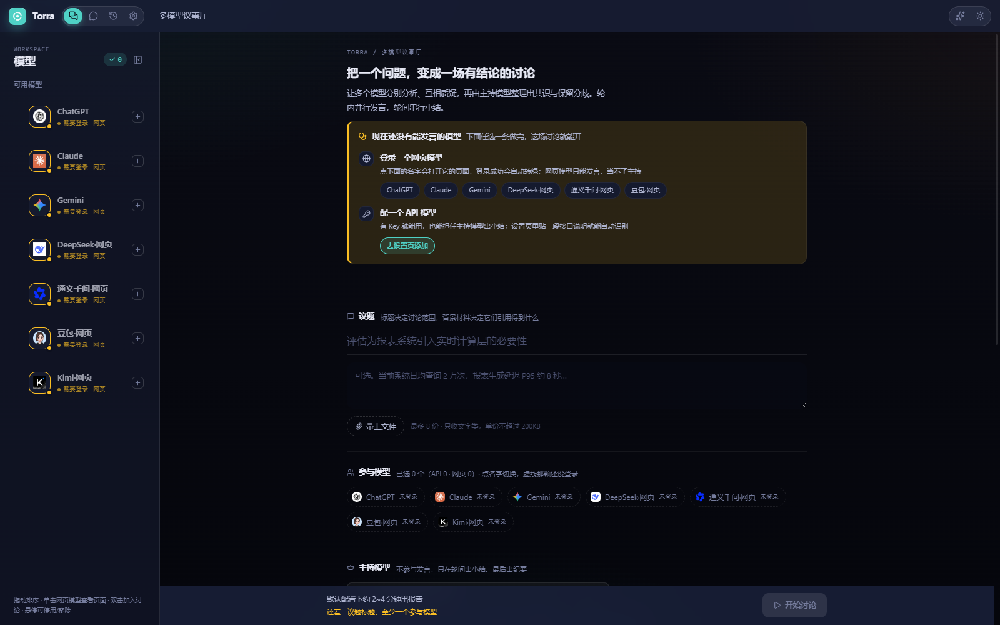
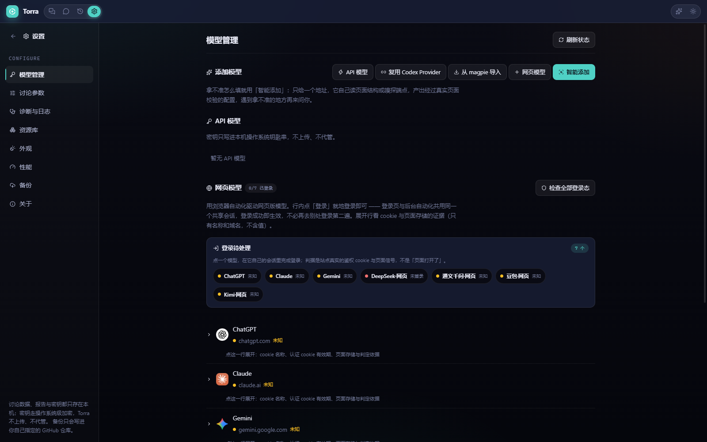
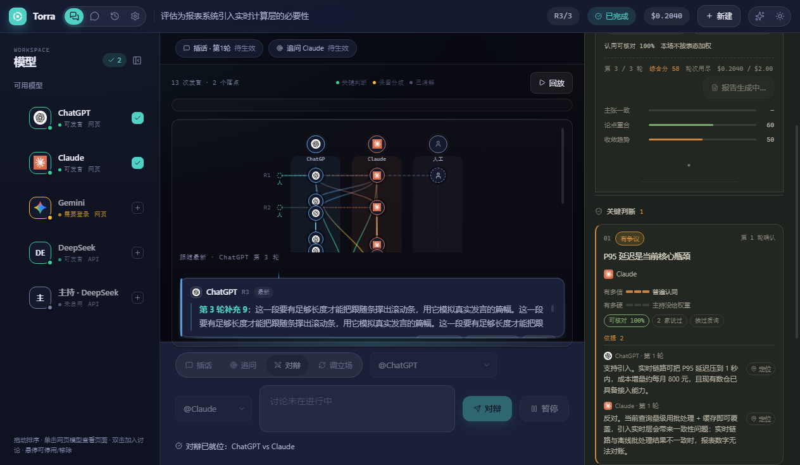
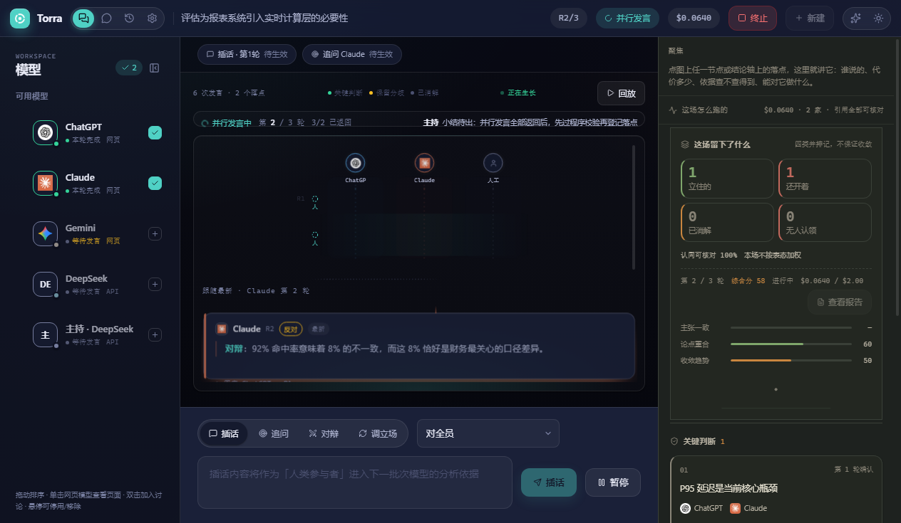
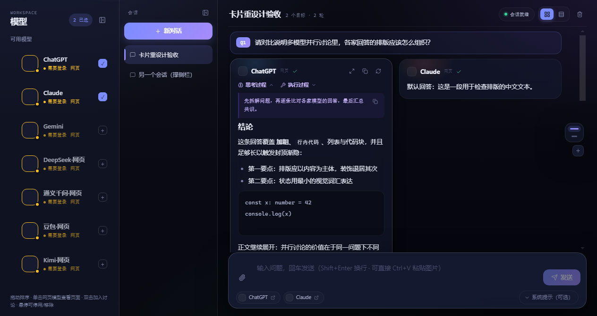
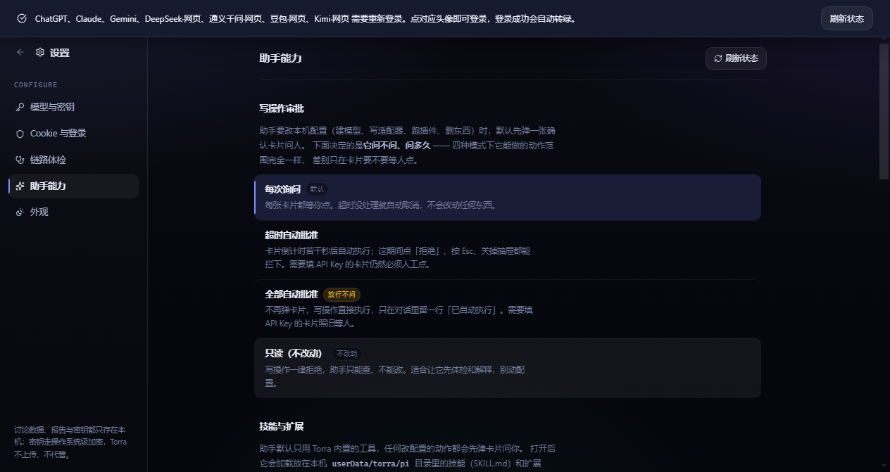
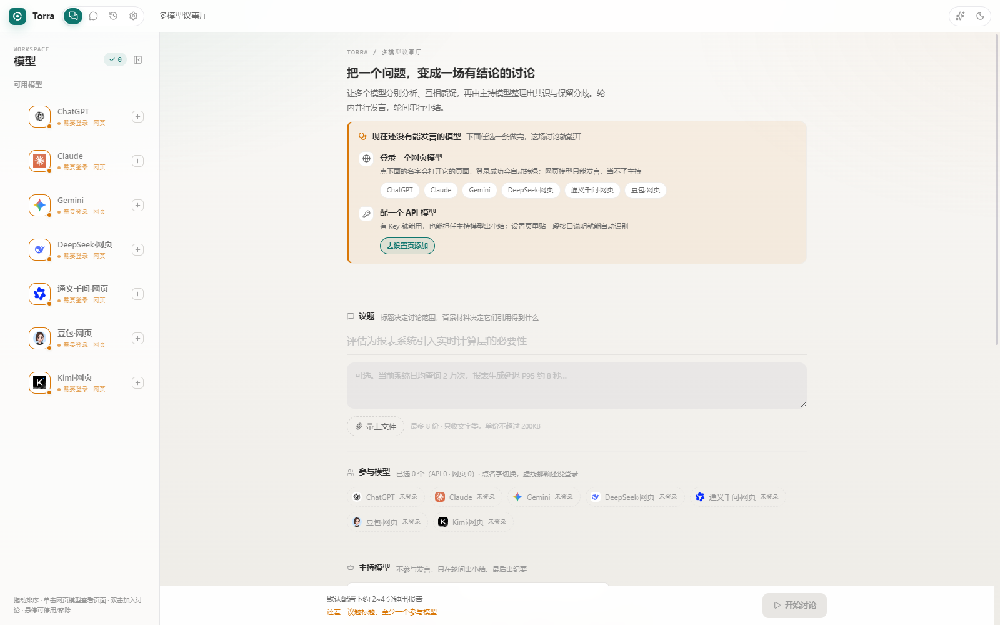

多模型 AI 议事厅 · MIT 开源
把一个问题，变成一场有结论的讨论。
你只提出议题。多个模型按轮次并行发言、点名回应，主持模型逐轮整理共识与保留分歧， 最后交给你一份报告 —— 每条结论都能溯源到是哪个模型在第几轮说的。
安装版与便携版都有。应用未做代码签名，首次运行 SmartScreen 会提示「未知发布者」，点「仍要打开」即可。
- 网页 + API 双通道
- 密钥只进本机钥匙串
- 40 套自测，离线可跑
三轮跑完：共识 4 条、保留分歧 3 条、待验证 2 条，缺席的那家写进报告
← 左右拖动看整张圆桌
为什么要做这个
同时问六家模型，最累的那个人是你
研究一个复杂问题时，很少有人只问一家模型。问着问着，你自己变成了那条链路里最慢的一环。
反复切换
在 3~5 个网页标签间来回跳，一次心流被切成五段。
人工搬运
把 A 的观点复制给 B，再复制给 C。你成了它们之间的路由器。
信息过载
N 个模型给你 N 份完整回答，共识和分歧还得自己提炼。
无法收敛
它们从未真正对话、互相质疑，讨论深度受限于你的转述能力。
市面上的聚合工具解决了「一次问多家」，但没有解决「让它们互相听见」。 Torra 想做的是后者 —— 把「用户当传声筒」变成「模型开圆桌会」。
它是怎么运转的
一轮 = 一批并行发言 + 一次主持小结
同一批次的模型看到的是同一份「上轮结束时的快照」，互相看不到本轮的发言 —— 独立性靠这个保证，交叉质询由主持在下一轮发起。
默认圆桌不预设正反方：模型各自给出独立判断。需要正面对垒时改用辩论策略， 或者用「调立场」给某个模型换个角色。默认 5 个模型 × 3 轮 ≈ 6 个串行批次， 几分钟内拿到一份带共识、分歧与溯源的报告。
同批次互相看不见。否则第一个开口的人会悄悄定调整场讨论，剩下的只是附和。
未决分歧不会因为「大家都这么说」而消失，消解它必须给出依据。一份报告的「保留分歧」长期为空，是产品退化成了共识机 —— 那是失败，不是成功。
主持声称的共识点如果引用了不存在的发言，程序直接拒绝这次小结，要求重来。
能力
五件事，都在「从问题到报告」这条路上
通道
你付费的会员，也是能上桌的模型
网页通道复用你已有的会员：在 Torra 自己的登录窗口里登录一次，登录态存在独立分区
（persist:torra-<model>），与日常浏览器完全隔离。API 与网页双通道，谁可用走谁。
- 真实可用性状态灯：不是「页面打开了」，是鉴权 cookie 与页面信号都判过。
- 智能添加：贴一段接口说明或一个地址，它自己读页面结构、嗅探端点，产出经过真实页面校验的配置。
- 网页模型只能发言，当不了主持 —— 主持要拿正文做上下文，得是能稳定读回的通道。

共识
共识度是算出来的，不是模型自报的
主张一致度、论点重合度、收敛趋势各自计分再汇总。一场几乎没有「我支持 / 我反对」句式的讨论 算不出主张一致度 —— 那一维就让位，权重摊给后两维，而不是拿一个常数把总分压低。
- 每个共识点带「可核验」与「依据 N」，点开能看到是哪几轮的哪几句发言。
- 未达阈值会直说「轮次用尽仍未收敛」，而不是硬凑一个结论。
- 报告里那条 58 / 阈值 85 是程序算的，不是主持自己觉得聊得不错。

介入与重试
人是参与者，不是传声筒
讨论进行中随时可以插手：插话进入下一批次所有（或指定）模型的上下文；定向追问让某家针对某条发言 再答一轮；要求对辩可以突破轮次上限，专项追加一轮。介入内容以独立区块注入，不会被摘要器当成 「已排除的方向」淡化掉，也不计入共识度 —— 人的表态不是模型之间的共识。
- 历史页可整场重跑、带着上一轮结论继续、仅重跑缺席模型、就某个分歧点再辩。
- 上一轮的结论以「已知前提」独立注入：可以认可、可以反驳，但不写进已确认共识，因此不参与核算。
- 重试产生新会话。原报告是决策依据，必须留着。

聊天模式
一次问多家，答案并排摊开
不是每件事都需要开一场圆桌会。聊天模式把同一个问题同时发给几家，回答并排摆着横向对比。 顶栏「原生 / 提取」决定要不要把答案读回本地：原生模式答案就留在各家页面上， 站点改版打断不了投递；提取模式读回来，进卡片、进历史、可复制可导出。
- 研讨模式必须走提取 —— 主持拿不到正文就没法往下讨论。
- 网页模型的窗格可以拖宽、对调、独占整面墙，挂上去的枚数由这屏实际像素算。

内置助手
议题进场前，报告出场后
界面右下角那枚抽屉不是通用聊天机器人，职责钉死在研讨链路的两端：进场前拆子问题、 把背景材料（PDF / Markdown / 本地目录）整理成研讨可用的快照；出场后针对报告里某条结论追问， 带着本场台账再辩一轮。
- 要改本机配置时默认先弹一张确认卡；四种审批模式，差别只在要不要等人点。
- 支持导入技能（SKILL.md）与挂载技能源仓库。
- 通用对话请直接用各家网页版 —— 那是 Torra 明确不做的。

界面
紧凑、克制、两套主题同源
标题栏两端各一枚玻璃胶囊：左边是分区导航，右边是助手与主题开关。图标常驻，文字悬停才浮出气泡。 整块导航 132px 宽，标题栏 52px 高 —— 省下来的地方留给正文。
明暗两套，一套令牌
白天是纸白玻璃，夜里是靛蓝暗玻璃。组件规则只读变量、不写死色号，切主题不需要任何一条单独的覆盖规则。
键盘与读屏都还在
图标态下文字收进气泡，但 aria-label 与 DOM 里的文字都留着：读屏念得出分区名，键盘聚焦同样能唤出气泡。
改动有护栏
40 套自测离线跑，CI 同口径。其中一套专门盯着 CSS：结构样式不许只写在深色覆盖里，死掉的类名会被查出来。

安全与合规
没有服务端，也没有代管
Torra 是一个本地客户端：不托管任何凭据，不上传任何会话。这条不是宣传语，是代码结构决定的 —— 它没有任何可以把数据发过去的地方。
密钥只进系统钥匙串
API Key 写入本机操作系统的凭据管理器，不上传、不代管；网页登录态存在独立的浏览器分区里，与日常浏览器互不干涉。备份推送前有一道密钥闸门，命中疑似密钥字段就整次中止。
备份只进你自己的仓库
换台机器接着用，靠的是把整机数据打包成一个 JSON 写进你自己指定的 GitHub 仓库，用仓库自带的提交历史代替服务端。合并按文件逐份取新，本机删掉不会把远端抹掉。
不绕过验证码与风控
网页自动化通道尊重各站点服务条款，不做任何伪装。检测到人机验证立即停下，指向那一格窗口请你手动接管。首次启动会先展示一道合规确认墙。
接入新站点前先确认条款
新增一个站点适配器只要往 adapters/ 放一个 YAML，热更新生效、不改主程序代码。但那份 YAML 该不该存在，得由接入的人自己判断该站点是否欢迎自动化访问。
一条产品红线：分歧不被抹平。如果一份报告的「保留分歧」长期为空，说明它退化成了表面附和的共识机 —— 那是失败，不是成功。这条约束同样写进了代码，不只是写在这里。
下载
装一个，先开一场试试
没有注册，也没有账号。从下载到第一份报告，中间只有下面这三步。
-
1
过合规确认墙。首次启动一次性展示条款与红线，确认后才进主界面。
-
2
配一条通道。API 模型填一个 Key；网页模型点「登录」，在 Torra 自己的窗口里登一次，凭据留在本机。
-
3
填议题开跑。研讨页挑两三家模型、定一个主持，几分钟后拿到带共识与分歧的报告。
安装版可选安装目录并创建快捷方式；便携版双击即用、不写注册表。 登录态与会话存在用户目录下的 torra 数据目录，卸载安装版不会清掉它。
只构建 Windows x64，macOS / Linux 尚未提供。 安装包哈希见 Releases 里的 SHA256SUMS.txt，下载后可自行校验。